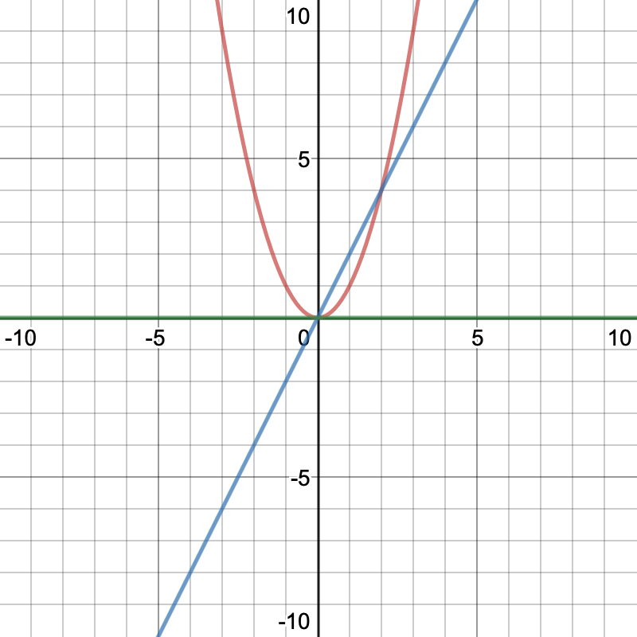

By:Mohammad-Ali Bandzar | Nov 8 2019
The power rule is used to find the derivative of things it tells us that the derivative of loading... will be loading... for any real n.
The easiest way to visualize this is to use it to take the derivative of loading..., we can let n=2 and use the rule we learnt above to find the derivative to be loading.... you can verify your solution by randomly drawing tangents on loading... and seeing how the slope of those tangents will always be equal to loading.... take x=0 as an example. the slope of our tangent at zero would be zero(a horizontal line) and 2(0)=0 this is shown on our graph below where the red line is our origional function, the blue line is our derivative and the green line is our tangent at zero
The derivative is commonly indicated with either a "prime"/"apostraphe"(') or with Leibniz notation we can write: loading... which means the same thing
so if loading... is our origional, we could write the derivative as loading... or as: loading...
we can rewrite loading... as loading... we can then apply our power rule by letting loading...
loading...
loading...
loading...
loading...
we can now conclude that loading...
All you need to remember to do is to multiply by the power, then subtract 1 from the power(reduce the power by 1).
these examples are completely random and have been chosen to help you memorize the power rule
| f(x) | derivative |
|---|---|
| loading... | loading... |
| loading... | loading... |
| loading... | loading... |
| loading... | loading... |
| loading... | loading... |
THANKS FOR READING